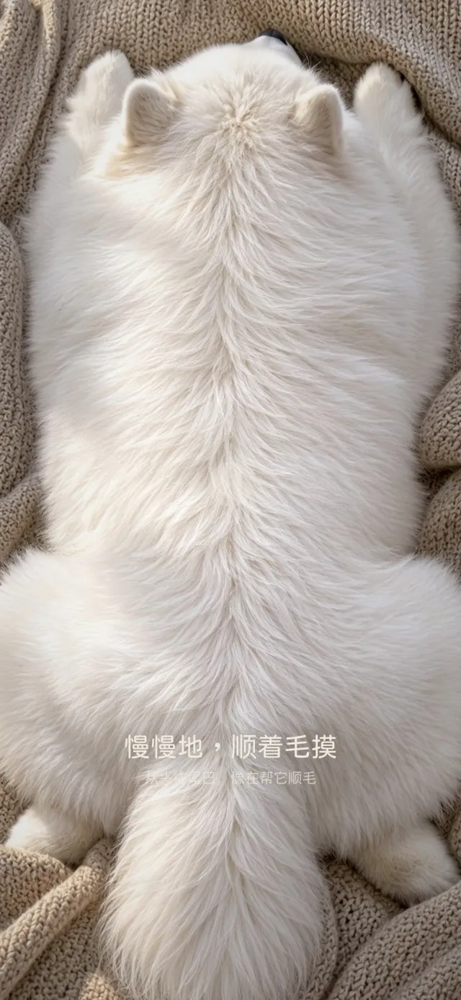
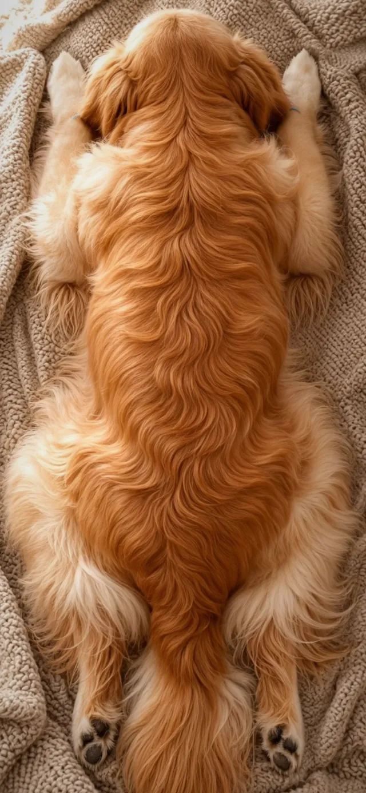
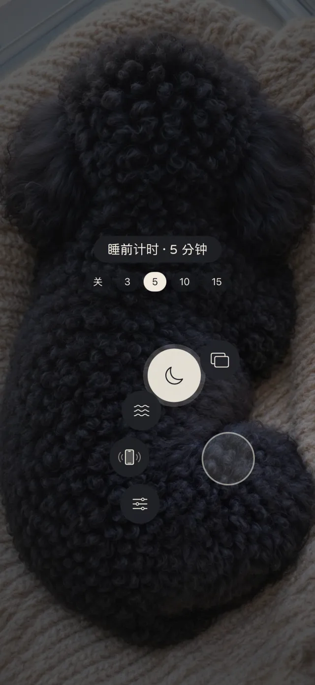
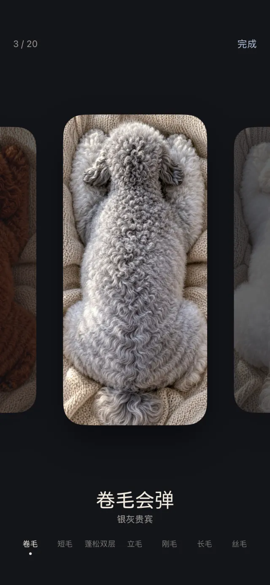

适合睡前使用的 iPhone App
摸一摸睡着的狗，
让自己慢下来。
手指顺着毛慢慢摸，毛会被推倒，松开后会弹回来。一直摸下去，狗的呼吸会变慢，最后睡得很沉。
在 App Store 下载- ✓ 20 只狗、7 种毛
- ✓ 没有分数、任务和喂食
- ✓ 不需要注册账号

手感
毛会随手指移动
顺着毛摸，毛会倒向手指，松开后慢慢弹回。逆着毛摸，毛会翻起来，过一会儿才落下。卷毛会弹跳，长毛跟在手后面飘动，短毛一直很服帖。

菜单
手指停住不动，菜单就在拇指旁边打开
摸的时候，屏幕上没有任何内容。想换狗或设置定时，把手指按住不动 0.8 秒，拇指旁边会展开五个按钮。手指不要抬起，滑到想选的按钮上再松开即可。

换狗
20 只狗，一只一只认识
黑贵宾、奶茶色短毛犬、柴犬、萨摩耶和金毛这 5 只可以免费摸。其余 15 只需要开通会员，可以先试摸 20 秒，也可以看一段广告，当天摸这一只。

睡前
狗睡着的时候，你也快要睡着了
慢慢摸大约一分钟后，狗会睡得很沉，屏幕也会变暗。如果开启了睡眠定时，时间一到呼吸声会渐渐消失，屏幕变黑。轻点一下即可回到画面。
▲ 摸的时候，屏幕上没有按钮。
适合这些时候
- 睡前躺在床上时
- 心里静不下来时
- 等车或排队时
- 想念自己的狗时
详细信息
| 狗 | 20 只（免费 5 只） |
|---|---|
| 毛的手感 | 7 种：卷毛、短毛、蓬松双层毛、立毛、刚毛、长毛、丝毛 |
| 声音 | 只有很轻的呼吸声，可以关闭 |
| 振动 | 狗有反应时偶尔振动一下，可以关闭 |
| 账号 | 不需要注册 |
| 价格 | 免费，含广告；会员为一次性购买 |
| 系统要求 | iOS 17 或更高版本的 iPhone |
广告只出现在换狗页面和设置页面的底部，摸狗的画面不会出现广告。
免费版
- 5 只狗
- 可使用睡眠定时、呼吸声和振动
- 换狗页面和设置页面底部有广告
- 看一段广告，当天可以摸一只未解锁的狗
会员（一次性购买）
- 可以摸全部 20 只狗
- 没有广告
- 之后新增的狗也包含在内
- 换新手机时，用同一个 Apple 账号恢复购买